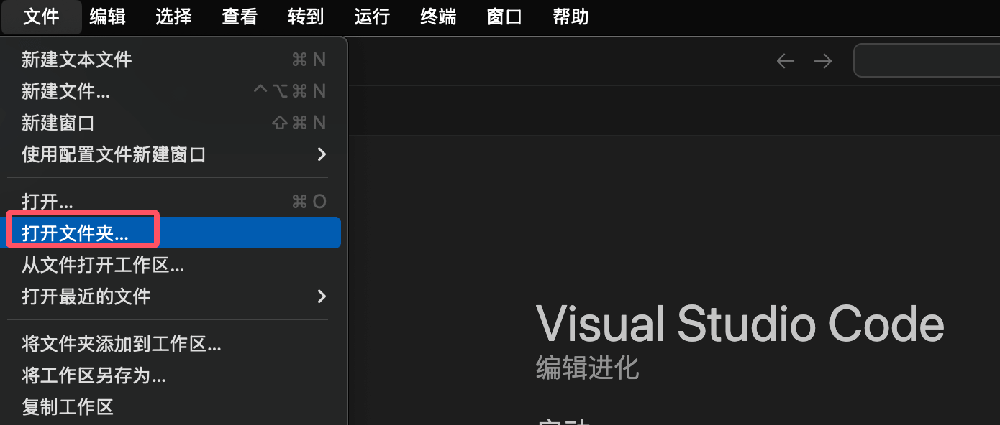
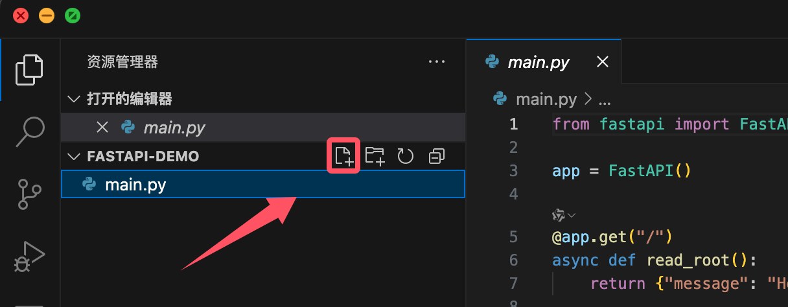
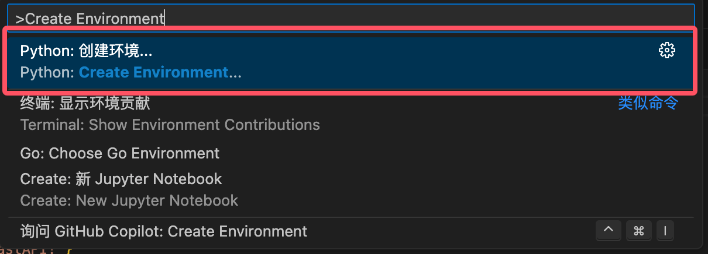
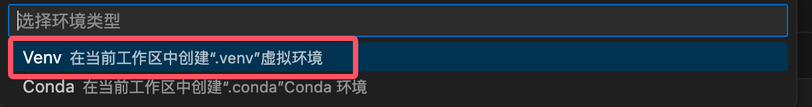
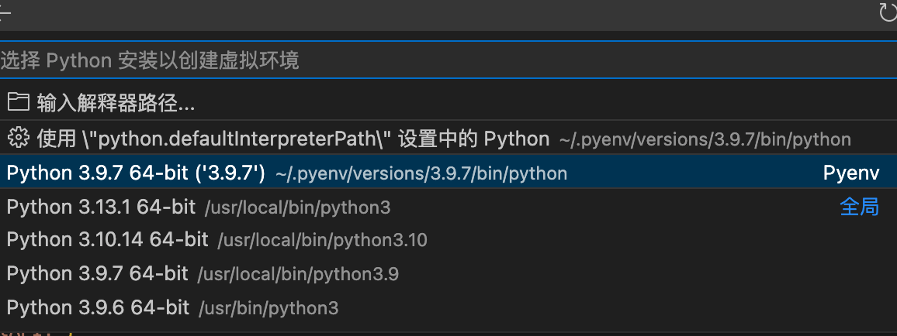
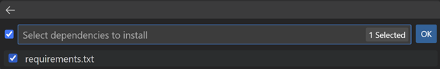
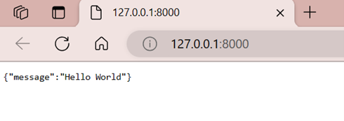

Developing FastAPI with VS Code
VS Code (full name Visual Studio Code) is a free, open-source, cross-platform code editor launched by Microsoft.
VS Code supports Windows, macOS, and Linux, with powerful features and flexible extensibility.
VS Code Tutorial:https://www.example.com/vscode/vscode-tutorial.html
Download URL:https://code.visualstudio.com/ 。
Recommended to install the following extensions:
- Python (Microsoft)
- Pylance (Microsoft)
- FastAPI Snippets
In addition, domestic Alibaba and ByteDance also have AI IDEs developed based on VS Code:
Create a virtual environment
We can first set up the Python development environment. If it is already installed or configured, you can skip it.
Install FastAPI and Uvicorn
pip install fastapi uvicorn
Create a FastAPI application
In the fastapi-demo directory, create amain.pyfile with the following code:
Example
app = FastAPI()
@app.get("/")
async def read_root():
return {"message": "Hello, FastAPI!"}
@app.get("/items/{item_id}")
async def read_item(item_id: int, q: str = None):
return {"item_id": item_id, "q": q}
Run the application
uvicorn main:app --reload
Parameter description:
mainPython module name (without .py)app: FastAPI instance variable name--reload: Enable auto-reload during development
Access API
- Open browser and visit
http://127.0.0.1:8000 - Interactive documentation:
http://127.0.0.1:8000/docs - Alternative documentation:
http://127.0.0.1:8000/redoc
VS Code development tips
In VS Code, select the menuFile > Open Folder…, open the fastapi-demo folder you just created.

When opening the project for the first time, VS Code will prompt "Do you trust the authors of this workspace?" Select "Yes, I trust the authors" to ensure extensions and resources run normally.
You can also usecode .Open the command directly in the directory, . The symbol denotes the current directory:code .
Create requirements.txt
Create a new file (File > New Text File or shortcut key⌘N), or you can directly create it with the new file icon on the right side of the project name:

Add the following content (project dependencies):
fastapi redis types-redis uvicorn
Save file (⌘S), named requirements.txt.
Create a virtual environment
Create a virtual environment
-
Open the command palette (⇧⌘P)
-
Enter and select:
Python: Create Environment
-
Select environment type:
Venv(built-in virtual environment)
-
Select the Python version (recommended to use the latest version installed on your machine)

-
Select
requirements.txtfile to automatically install dependencies
-
Click Confirm, and the system will create a virtual environment and automatically install dependencies.
Next, we can edit the main.py file:
Example
app = FastAPI()
@app.get("/")
def root():
return {"message": "Hello World"}
Press F5 to start the debugger to run the code.
In the pop-up dropdown menu, select the FastAPI debug configuration option from the list:

This operation will automatically create a debug configuration that uses uvicorn to start the application server through the debugger, and allows you to step through the source code to inspect its behavior.
You should see information similar to the following in the terminal:

In the terminal, Ctrl+click the displayed URL address http://127.0.0.1:8000/ to open it in your browser:

If the default port is already occupied:
- Stop debugger
- Open the command palette (⇧⌘P), search and selectDebug: Add Configuration
- SelectPython Debugger, then selectFastAPI
- This will be
.vscode/launch.jsoncreate a custom configuration file in it - In
"args":[]In it, add the following content to set a custom port:"args": ["--port=5000"]
Project structure suggestions
For large projects, the following structure is recommended:
my_fastapi_project/ ├── app/ │ ├── __init__.py │ ├── main.py # 应用入口 │ ├── api/ # API路由 │ │ ├── __init__.py │ │ ├── items.py │ │ └── users.py │ ├── models/ # 数据模型 │ │ ├── __init__.py │ │ └── user.py │ ├── schemas/ # Pydantic模型 │ │ ├── __init__.py │ │ └── user.py │ └── db/ # 数据库相关 │ ├── __init__.py │ └── session.py ├── tests/ # 测试代码 │ ├── __init__.py │ └── test_api.py ├── requirements.txt # 依赖列表 └── .env # 环境变量
Debugging and testing
Debug FastAPI
In VS Code:
- Set breakpoint
- Press F5 to start debugging
- Access the API endpoint in the browser
Unit Testing
Usagepytest：
Example
from fastapi.testclient import TestClient
from main import app
client = TestClient(app)
def test_read_root():
response = client.get("/")
assert response.status_code == 200
assert response.json() == {"message": "Hello, FastAPI!"}
Run tests:
pytest
Deployment preparation
Production server
Recommended usage:
- Uvicorn + Gunicorn
- Hypercorn
- Daphne
Docker Deployment
CreateDockerfile：
FROM python:3.9 WORKDIR /app COPY requirements.txt . RUN pip install --no-cache-dir -r requirements.txt COPY . . CMD ["uvicorn", "app.main:app", "--host", "0.0.0.0", "--port", "80"]
Build and run:
docker build -t fastapi-app . docker run -d -p 80:80 fastapi-appother extensions